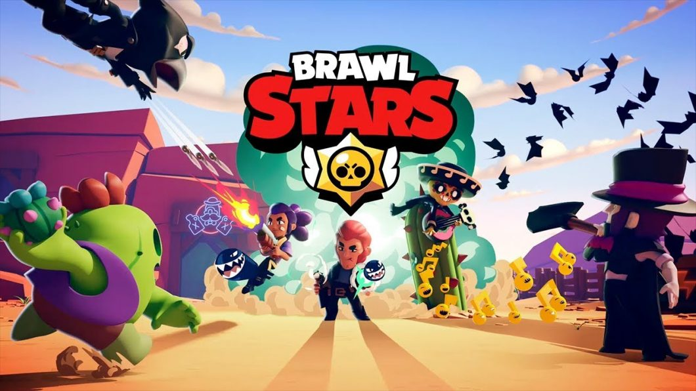

Brawl Stars é um jogo de ação multiplayer desenvolvido pela Supercell, lançado globalmente em 12 de dezembro de 2018, após uma fase de testes beta que começou em junho de 2017 no Canadá. O jogo foi concebido para oferecer batalhas rápidas, intensas e acessíveis, com controles simples e uma perspectiva isométrica. Durante o período beta, a Supercell realizou várias mudanças significativas, como a transição da orientação da tela de vertical para horizontal, ajustes nos modos de jogo e a introdução de um sistema de progressão baseado em troféus. Após o lançamento global, Brawl Stars se destacou rapidamente no cenário dos jogos móveis, atraindo milhões de jogadores e se tornando um dos títulos mais populares da Supercell. O jogo apresenta uma ampla gama de personagens chamados "Brawlers", cada um com habilidades únicas, e oferece vários modos de jogo, incluindo batalhas 3v3, batalhas de sobrevivência no estilo battle royale, e eventos especiais rotativos. Além de seu sucesso comercial, Brawl Stars desenvolveu uma cena competitiva robusta, com torneios e campeonatos realizados em todo o mundo. A Supercell tem apoiado ativamente o crescimento do jogo, lançando atualizações regulares que introduzem novos Brawlers, modos de jogo, skins e outras melhorias. O jogo é conhecido por seu estilo artístico vibrante, sua jogabilidade acessível, e a profundidade estratégica que oferece tanto para jogadores casuais quanto para os mais dedicados. O futuro de Brawl Stars parece promissor, com a Supercell continuando a investir no desenvolvimento do jogo e na expansão de sua comunidade global, mantendo-o entre os jogos mais influentes e bem-sucedidos no mercado de jogos móveis.
Hora de BRAWL! Junte-se aos seus amigos e prepare-se para o jogo épico do multiplayer MAYHEM! Brawl Stars é o mais novo jogo dos criadores de Clash of Clans e Clash Royale. Ir para o seu modo de jogo favorito e jogar partidas rápidas com seus amigos. Atira-lhes para cima, rebentar-nos, esmurre-os e ganhem o BRAWL.